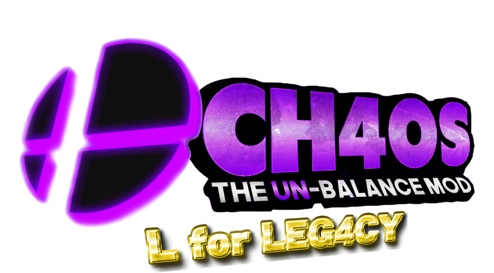

I LOVE Ch4os. I love it as a mod and all, but as a previous dev, I knew it's flaws. I tried to fix them, but Bagel was a whiny ass and
said "nahhh this mod sucks i want to kill it uhhhhh" and then he straight-up cancelled it. Then came TheOmniDoctor, doing something
that I never could - rebuild it. He took Ch4os and said "Let there be more unbalance" and so there was. He was the god who brought back
Ch4os from the dead. In partnership with my team from my old and probably forgotten mod, Revenge, Ch4os L was born. He brought back old
things from older versions of original mods, and he brought new changes to the table. It was amazing. Though, like older builds of the
original Ch4os, there was one character that basically can ruin the entire experience. In older builds, this was Ganondorf, Wario,
Sonic, Marth and a few others. Then came Ch4os L, and sitting back on his dusty throne from Brawl, came the return of distant "Fight
me."s This, ladies and gents, is Meta Knight.
I had no issues with Brawl's meta (normally because I'm a casual in that game and most of the time the Metas I play are CPUs), but then
this motherfucker shows up, injects himself with ultra intinct and slashes away while you're in 15 second witch time. Sounds not that
bad, until you realise you just FREEZE in place. He has plenty instakills, can attack while shielding or airdodging, and is going to
implement gliding someday. But, the problem is, Meta Knight is the best option you can get. THE. BEST. Screw Bayo and Brawl MK, this is
the real jackass. He's gotten no nerf so far, which is even worse, considering how to avoid MK's attacks simply dumbs down to “You
should play with real people then hope they don't pick MK.” As a developer, I might consider actually nerfing MK back to his vanilla
roots if this is how it's gonna end up.
Ch4os, is in fact, popular. But, unlike Tr4sh, it has moments when it's not fun. Does it deserve attention? Yes. Do I feel that this is
"how to get your mod popular 101"? Yes. The reason on this is because there's some great balance packs and modpacks everywhere. But,
for some reason, this gets most of the attention. Unbalance mods like this I don't feel deserve as much popularity as they do now. I'd
actually would rather keep this dead after the failure of Revenge. But, this is Omni. I'm happy it's still alive, but... it needs a lot
of work. I hope this wasn't too harsh, but I'm sorry. Meta Knight is getting nerfed the second you're adding gliding.
A Legacy that maybe wasn't for the best.